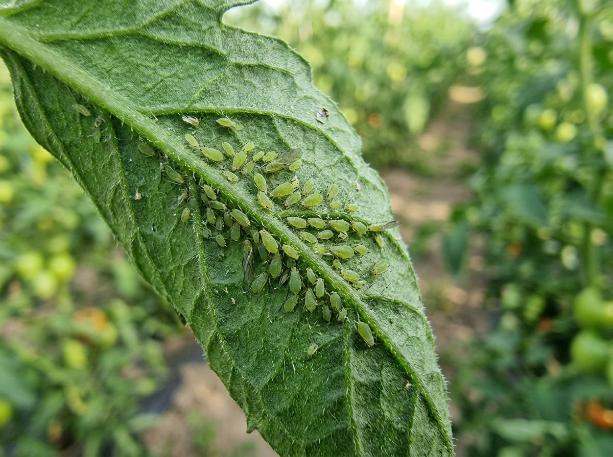

Good morning, Ravi 👋
Real-time agricultural monitoring across all 10 crop zones.
Latest Detection
Today • 10:42 AM

Small sap-sucking insects commonly found on the underside of leaves and young shoots. Can secrete sticky honeydew.
Active Alerts
4Pest Activity — Last 7 Days
Number of recorded crop pest detections
Crop Health Index
AI Pest Detection • All Crops Prototype
Upload any crop photo or turn on live camera. Select a crop or let KRISHI NETRA auto-detect.
Upload or Capture Crop Leaf
Take a clear photograph of infected leaves, stems, or pests across any crop.
Diagnostic Engine Ready
Upload an image, snap a camera frame, or click a crop sample to run computer vision analysis.
Aphid
Aphids are small sap-feeding insects clustering around young shoots and leaf undersides, causing curling and chlorosis.
Apply cold-pressed neem oil (5ml/L) or targeted deterrent frequency. Avoid spraying broad-spectrum insecticides to preserve predator ladybirds.
Detection History • All Crops Log
Live chronological record of all farm scans with export capability.
| PEST / ORGANISM | CROP LOCATION | AI CONFIDENCE | SEVERITY | DETECTION TIME | STATUS |
|---|---|---|---|---|---|
|
🐛 Aphid (माहू)
|
Tomato • Field 02 | 94% | Medium | Today, 10:42 AM | Reviewed |
|
🐛 Fall Armyworm
|
Maize • Field 04 | 91% | High | Today, 08:15 AM | Action Needed |
|
🐞 Ladybird Beetle
|
Tomato • Field 03 | 98% | Beneficial | Yesterday, 04:20 PM | Protected |
|
🪲 Whitefly (सफेद मक्खी)
|
Cotton • Field 01 | 89% | High | 02 Oct 2026 | Action Needed |
|
🐛 Chilli Thrips
|
Chilli • Block 03 | 92% | Medium | 01 Oct 2026 | Monitored |
|
🌾 Brown Planthopper
|
Rice • Paddy 05 | 93% | High | 30 Sep 2026 | Action Needed |
Smart Alerts & Telemetry Notifications
Active biological threshold triggers and meteorological cautions.
High pest activity detected
Fall armyworm larvae identified in Maize Block 04. Pheromone trap catch count exceeded ETL.
Aphid population increasing
Recent observations suggest increased aphid activity around young tomato shoots in Field 02.
Whitefly pressure in Cotton
Field 01 sticky traps recorded over 8 flies per leaf. Foliar wash advised.
Beneficial insect activity healthy
Ladybird beetles and predatory pollinators thriving in Field 03.
Frequency Control Prototype
Non-chemical acoustic/ultrasonic bio-deterrence control interface.
How KRISHI NETRA Works
System Performance Indices
Beneficial Insects • Biological Control Hub
12 verified agricultural allies. Track natural predators, pollinators, and parasitoids to eliminate chemical dependency.
Natural Biocontrol Suppression: 38% Active
🌿 KRISHI NETRA Mandatory Biocontrol Protocol
Whenever KRISHI NETRA identifies beneficial organisms (Ladybirds, Lacewings, Spiders, or Bees) in high counts, it automatically locks out chemical foliar recommendations and advises natural biological conservation. Maintaining border rows of mustard, coriander, and marigold preserves these species year-round.
Farmer Profile & Land Configuration
Manage farm location, crop acreage, and telemetry preferences.